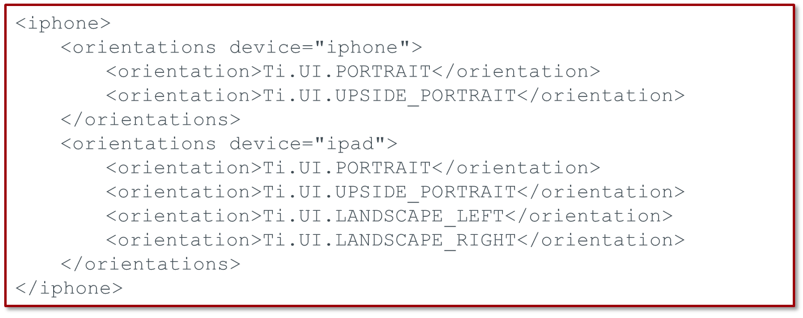
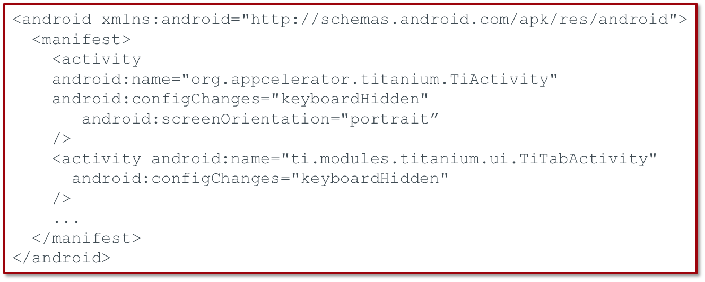
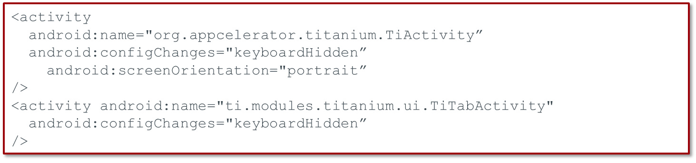
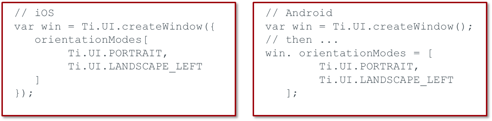
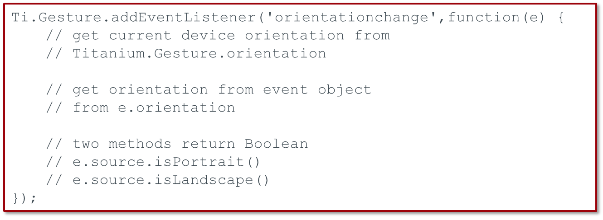

Module time: 60 mins(30 mins teaching, 30 mins for lab)
Agenda
- Device orientation
- Gestures
In this module, we'll discuss how to deal with device orientation as well as how to integrate gestures other than taps into your app.
Device orientation

Locking orientation
Fixing orientation per window
Handling orientation events
Three ways to deal with orientation:
- Lock the orientation for the entire app
- Setting a fixed orientation for specific screens within your app (e.g. one screen in portrait and another in landscape, but those are locked)
- Actively updating your app's UI based on the current orientation by handling orientation events
Per Apple's HIG on iPhone, either:
- Lock orientation, or
- Support portrait, landscape left & right, but not upside down (to prevent upside down phone during incoming call)
On iPad, you should support all orientations
Locking Orientation - iOS
In tiapp.xml:

For iOS, set supported orientations in tiapp.xml
To lock orientation, just remove the non-supported orientations
Locking Orientation - Android
Option 1 - modify tiapp.xml:
- Copy code from build/android/AndroidManifest.xml
- Add nested <manifest> tags within <android>
- remove '|orientation' from every node

Three options for locking orientation on Android
Make sure to remove the bar and orientation from every node
Locking Orientation - Android
Option 2 - Custom Android manifest file
- Copy build/android/AndroidManifest.xml to platform/android/AndroidManifest.xml
- remove '|orientation' from every node

Option 2 is to create a custom manifest file in the Platform/android folder
The Platform folder doesn't exist by default
Clean the project before rebuilding to clear out old AndroidManifest.xml file
Fixed Orientation per Window
Window Orientation Modes
Supported values include:
- PORTRAIT / UPSIDE_PORTRAIT
- LANDSCAPE_LEFT / LANDSCAPE_RIGHT
- FACE_UP / FACE_DOWN

You can set orientation on a per window basis within your app
The older Ti.UI.orientation property technique is deprecated and should not be used.
Orientation Events
Ti.Gesture.orientationchange
Event properties and methods:

You can react to orientation change events
Use the Ti.Gesture event listener
Test on device to be sure you're getting/using values you expect
They can differ between iOS and Android
Handling Orientation Changes
React to orientation change via event listener
Use self-contained, self-updating UI components
Move, rotate, and swap UI elements
Take advantage of the orientation
Don't forget the soft keyboard
Unless your UI dictates otherwise, best-practice is to actively react to orientation changes
Self-contained, self-updating is same as we use in TiBountyHunter with the tableview
Components listen for a global orientation event and update themselves
Take advantage — move components to logical location, change size & shape, show different content (as in the Jamie Oliver recipe application that shows longer how-to info in landscape and short text & ingredients in portrait)
Soft keyboard — might cover a lot more of your UI
Gestures
Shake
Swipe
Touch start, end, move, and cancel
Pinch (iOS)
Long press
Pitch, roll, and yaw
Other than taps, you can react to these gestures
(don't go too deep here, there are upcoming slides for that)
Shake

Ti.Gesture.shake
Event object properties

timestamp is useful to track the time since last shake
Useful for not over reacting to shakes (delay before counting as a new shake event)
Swipes

Built-in event on most Ti.UI elements
Event object properties:
- direction
- source
- x/y coords
Swipe supported on pretty much all Ti.UI components
Most likely to be used on views, windows, tableviews, imageviews, labels, web views
Key object properties are direction (left or right) and source
Touches
Built-in event on most Ti.UI elements
Subtypes: touchstart, touchmove, touchend, touchcancel
Event object properties:
touchmove fires continuously during event
touchcancel fired when your app is interrupted (phone call)
Use x/y coordinates to determine direction
Pinch

iOS only (for now)
Zoom only (no rotation)

Pinch support added in 1.8.0.1, Android support planned
Only zoom supported now, rotation might be added
Long press
Natively supported in 1.8+
Simulate by tracking touchstart and touchend
https://gist.github.com/1019105
Faking long press in Android
https://gist.github.com/1018107
Long press to delete table row
Keep in mind native UI conventions for long presses
Native support for long press added in 1.8.0.1
Simulate in older SDKs by tracking touchstart and touchend
A couple of gists show how you could use this
Keep in mind native conventions: e.g. on iOS, magnifies view in some contexts
Long press will be natively supported soon, maybe 1.8
Accelerometer
iOS and Android natively support gyroscope
Titanium APIs don't support it currently
Not all devices include necessary gyro hardware
Approximation: Use the accelerometer to track pitch, roll, and yaw changes
Kitchen Sink demo
Android and iOS support gyroscope APIs to track rotational changes
But not currently supported in Titanium APIs
Use linear acceleration from accelerometer as workaround
Detect 3-axis change values and will probably need some good math to get accurate correspondence to pitch, roll, yaw
Demo must be run on a device
Phone tab > Accelerometer
Resources/examples/accelerometer.js
Lab Goals
Update simple app to add orientation support
Update data based on swipe and shake events
Demo and wiki URL
In this lab you will create modify a simple UI based on orientation changes and then alter than data based on swipe and shake gesture events. When the phone registers the shake event, it will choose a random photo to display as the album image. When you swipe over the copy, it will choose a random one for display as well. Rotation of device will reorient the content of the window to be more effectively located.